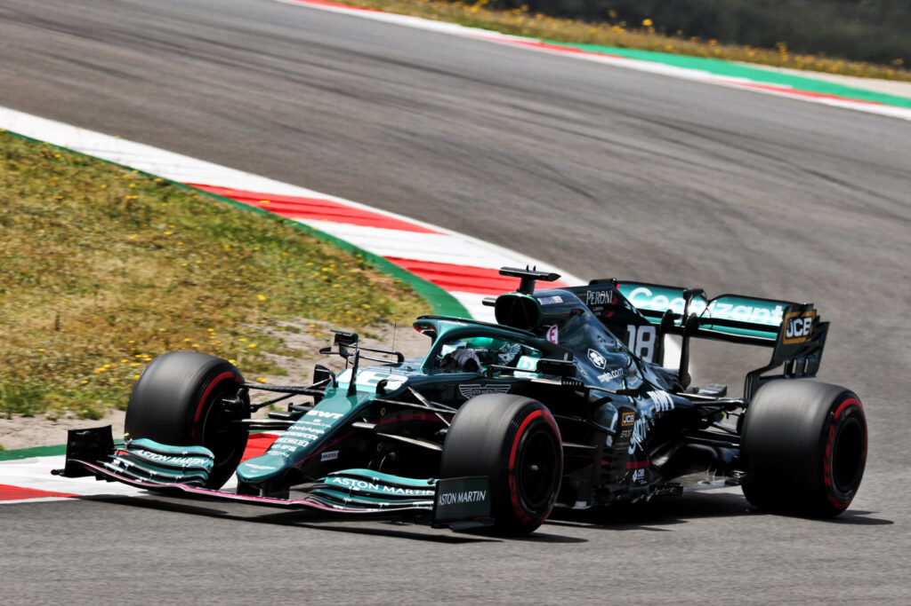

Lance Stroll è nato a Montréal il 29 ottobre 1998, è un pilota automobilistico canadese, attivo in Formula 1 con l'Aston Martin. Ha disputato cinque stagioni in Formula 1 con Williams, Racing Point e Aston Martin, cogliendo una pole position e tre terzi posti come migliori risultati in gara. Il suo numero di gara è il 18. Alla vigilia delle prime libere del Gran Premio di Abu Dhabi 2015 fu scelto dalla Williams come collaudatore, lasciando così la FDA. Il 3 novembre 2016 la Williams F1 annunciò l'ingaggio di Stroll come pilota titolare per la stagione 2017. Il pilota canadese, forte dell'appoggio economico fornitogli dal padre Lawrence, si preparò per la stagione disputando diverse sessioni di test privati su vecchie monoposto Williams. Il suo debutto non fu, però, facile: nella gara inaugurale, a Melbourne, Stroll subì un pesante distacco dal compagno di squadra Felipe Massa in qualifica, ritirandosi poi in gara per un problema ai freni. Il pilota canadese si ritirò anche nei successivi Gran Premi di Cina e Bahrein, venendo tamponato in entrambe le occasioni da altri piloti. I primi punti arrivarono nel gran premio di casa, in Canada, dove Stroll chiuse al nono posto dopo essere scattato dalle retrovie. Nel successivo Gran Premio d'Azerbaigian Stroll batté per la prima volta il compagno di squadra in qualifica, facendo segnare l'ottavo tempo. In gara, sfruttando i diversi ritiri e contatti davanti a lui, conquistò il primo podio in carriera, tagliando il traguardo in terza posizione dopo aver girato in seconda posizione per diversi giri (alle spalle del vincitore Daniel Ricciardo) ed essere stato superato in volata da Valtteri Bottas sul rettilineo di arrivo. Stroll giunse nuovamente a punti nel successivo Gran Premio d'Austria, nel quale tagliò il traguardo in decima posizione dopo essere partito diciottesimo. Seguirono tre gare chiuse fuori dalla zona punti; il pilota canadese tornò a far segnare risultati utili a Monza, dove, dopo essere scattato dalla seconda posizione grazie all'arretramento in griglia delle due Red Bull, Stroll conquistò il settimo posto, davanti al compagno di squadra Felipe Massa. Stroll marcò punti anche a Singapore e in Malesia, concludendo ottavo in entrambe le occasioni. La serie utile si interruppe a Suzuka, dove il pilota canadese si ritirò per una foratura. Concluso in undicesima posizione il Gran Premio degli Stati Uniti, in Messico Stroll tagliò il traguardo al sesto posto, facendo segnare il suo secondo miglior risultato stagionale. Le ultime due gare della stagione furono decisamente meno positive per il pilota canadese, che tagliò il traguardo in ultima posizione in entrambe le occasioni, staccatissimo dal compagno di squadra. Stroll chiuse la stagione al dodicesimo posto assoluto, con 40 punti.  Il 30 novembre 2018 fu ufficializzato il suo ingaggio per la stagione 2019 da parte della Racing Point, acquistata durante la stagione da una cordata guidata dal padre Lawrence, al fianco di Sergio Peréz. Al debutto stagionale, in Australia, Stroll chiuse al nono posto, dopo essere scattato dalla sedicesima posizione. Nelle gare seguenti Stroll mostrò delle difficoltà in qualifica, venendo sempre battuto dal compagno di squadra e riuscendo a passare la prima fase delle qualifiche solo all'undicesimo Gran Premio stagionale (il Gran Premio di Germania). Proprio in Germania il pilota canadese ottenne il suo miglior risultato stagionale, tagliando il traguardo in quarta posizione in una gara caratterizzata dalle mutevoli condizioni meteo. Nel resto della stagione Stroll conquistò solo due ulteriori piazzamenti a punti (un decimo posto in Belgio e un nono in Giappone). A Monza il pilota canadese riuscì a qualificarsi nel gruppo dei primi dieci per la prima volta in stagione, ma in gara fu coinvolto in un contatto con Sebastian Vettel e terminò fuori dalla zona punti. Stroll chiuse la stagione al quindicesimo posto in classifica generale, con 21 punti. Nel 2020 la Racing Point mostrò una maggiore competitività, consentendo a Stroll e al compagno di squadra di occupare stabilmente posizioni nella prima metà del gruppo. Nell'inaugurale Gran Premio d'Austria Stroll fu costretto al ritiro da un problema tecnico, ma nei successivi Gran Premi di Stiria e Ungheria il pilota canadese giunse a punti, terminando rispettivamente settimo e quarto. Continuò la serie di risultati positivi nel doppio appuntamento sul circuito di Silverstone, conquistando un nono e un sesto posto. Nel rocambolesco Gran Premio d'Italia Stroll conquistò il secondo podio in carriera, tagliando il traguardo in terza posizione alle spalle di Pierre Gasly e Carlos Sainz, dopo aver occupato brevemente la prima posizione. Concluse la stagione all'11º posto, con 75 punti, molto staccato dal compagno di squadra. Nel 2021 Stroll mantenne il suo posto nella squadra, che venne rinominata Aston Martin in seguito all'acquisto da parte di una cordata di investitori guidata da Lawrence Stroll di una quota del marchio britannico. Stroll fu affiancato dal quattro volte campione del mondo Sebastian Vettel, in uscita dalla Ferrari. A inizio stagione la Aston Martin si dimostrò meno competitiva della monoposto precedente; Stroll riuscì a qualificarsi nei primi dieci e a conquistare punti nelle prime due gare, con un decimo posto in Bahrein e un ottavo posto a Imola, ma nel Gran Premio del Portogallo restò escluso già nella prima fase delle qualifiche e terminò la gara solo quattordicesimo. Tornato a punti nel Gran Premio di Monaco, chiuso in ottava posizione, a Baku Stroll fu costretto al primo ritiro stagionale per via di una foratura, mentre occupava la quinta posizione. Nei successivi appuntamenti in Francia e Stiria ottenne altri punti, con un decimo ed un ottavo posto. A Budapest, sotto la pioggia, Stroll tamponò Charles Leclerc alla prima curva, autoescludendosi dalla gara e rimediando cinque posizioni di penalità sulla griglia di partenza per la gara seguente. Dopo altre due gare fuori dalla zona punti, nel Gran Premio d'Italia Stroll colse il suo miglior risultato stagionale, tagliando il traguardo in settima posizione. Si migliorò in Qatar, dove tagliò il traguardo al sesto posto dopo essere scattato dalla dodicesima posizione. Le ultime due gare dell'anno non portarono risultati utili e Stroll chiuse il campionato al tredicesimo posto, con 34 punti.